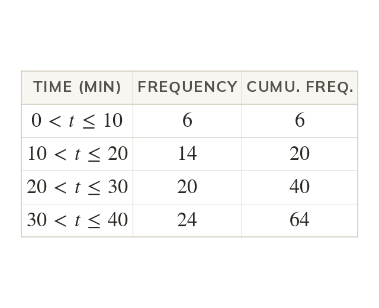
Running totals
The cumulative frequency of a class is the running total of the frequencies up to the end of that class. The last total is the number of values.
Grouped data hide their exact values, so a cumulative frequency curve is how the median, quartiles and percentiles are estimated. Its readings give the five values a box plot needs, and the next lesson shows the same kind of data by area in a histogram.
Work down the page at your own pace. Write every answer in your book first, then click to check it.
Read each card, then follow the worked examples one step at a time.

The cumulative frequency of a class is the running total of the frequencies up to the end of that class. The last total is the number of values.
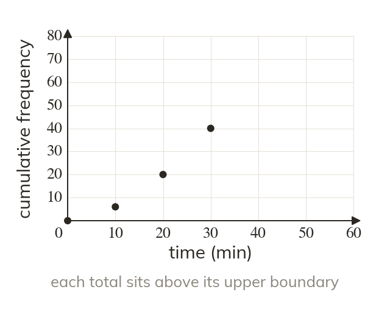
Each total is plotted above the upper boundary of its class, because by then every value in the class is counted. Start with at the lowest boundary.
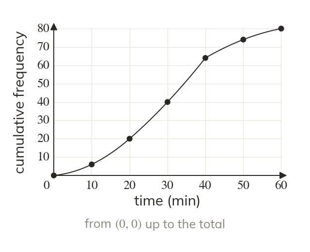
Join the points with a smooth curve, or with straight lines for a polygon. The curve ends at the total,
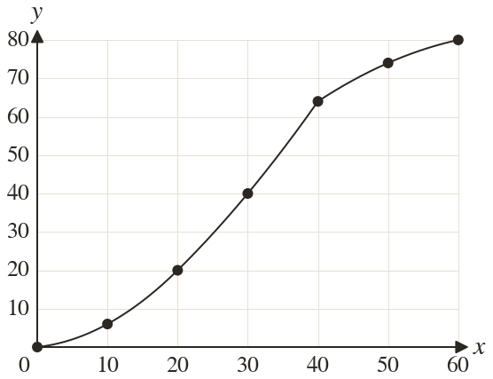
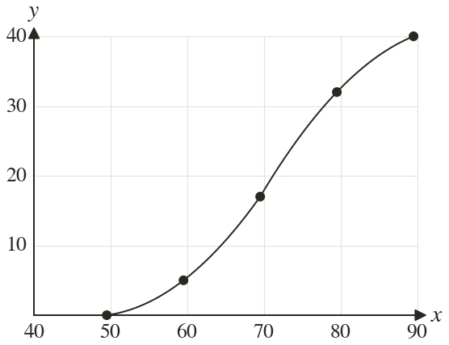
Pick an answer. If it's wrong, the feedback tells you which mistake it was.
Write the blanks in your book first, then tap each one to check.
Read each card, then follow the worked examples one step at a time.
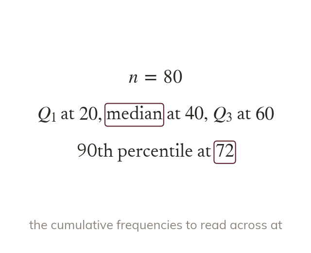
For grouped data, read the median at and the quartiles at and
The rth percentile is read at rn/100
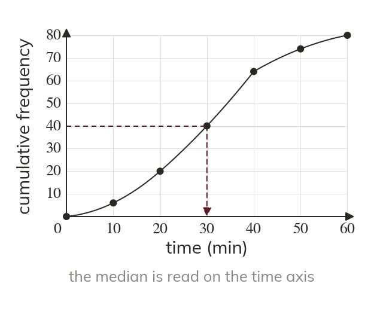
Read across from the cumulative frequency to the curve, then down to the value. The median of the times is minutes.
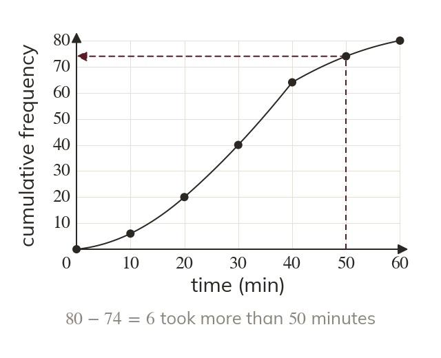
Read up from the value to the curve, then across. Take the reading from the total for the number above it.
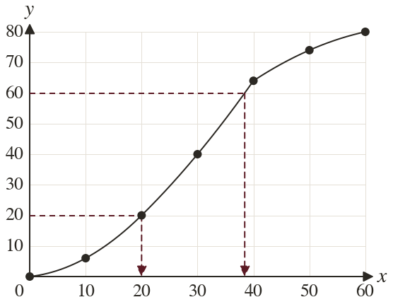
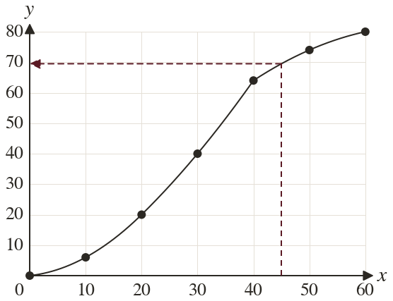
Pick an answer. If it's wrong, the feedback tells you which mistake it was.
Write the blanks in your book first, then tap each one to check.
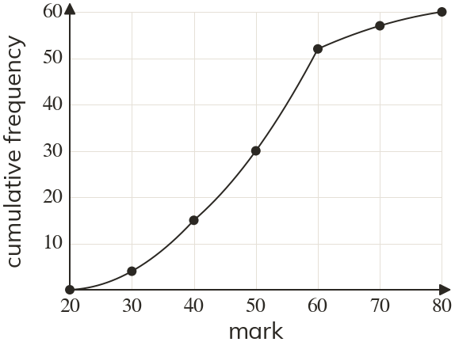
Finished? Next lesson: S3.4 Histograms and Frequency Polygons.
For each skill, tap the one that is true for you today. Your Revise pages start with anything you mark Not yet.
Your ratings are saved on this device only.
Log in, then search for a code to practise that skill.